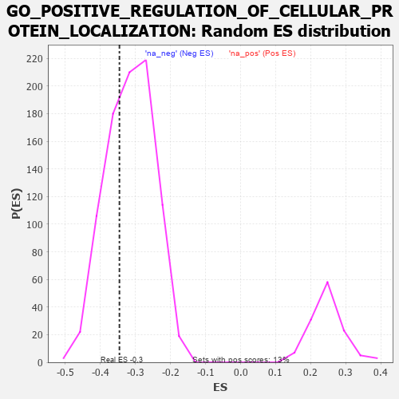

| | | Dataset | 7d |
| Phenotype | NoPhenotypeAvailable |
| Upregulated in class | na_neg |
| GeneSet | GO_POSITIVE_REGULATION_OF_CELLULAR_PROTEIN_LOCALIZATION |
| Enrichment Score (ES) | -0.34581536 |
| Normalized Enrichment Score (NES) | -1.0967637 |
| Nominal p-value | 0.31844217 |
| FDR q-value | 0.7564155 |
| FWER p-Value | 1.0 |
Table: GSEA Results Summary
 Fig 1: Enrichment plot: GO_POSITIVE_REGULATION_OF_CELLULAR_PROTEIN_LOCALIZATION
Fig 1: Enrichment plot: GO_POSITIVE_REGULATION_OF_CELLULAR_PROTEIN_LOCALIZATION
Profile of the Running ES Score & Positions of GeneSet Members on the Rank Ordered List
| PROBE | GENE SYMBOL | GENE_TITLE | RANK IN GENE LIST | RANK METRIC SCORE | RUNNING ES | CORE ENRICHMENT | | 1 | RAC2 | | | 60 | 2.442 | 0.0408 | No |
| 2 | RHOU | | | 210 | 1.031 | 0.0423 | No |
| 3 | CNST | | | 317 | 0.792 | 0.0446 | No |
| 4 | GSK3A | | | 351 | 0.745 | 0.0551 | No |
| 5 | LARP7 | | | 369 | 0.731 | 0.0675 | No |
| 6 | MESD | | | 384 | 0.713 | 0.0798 | No |
| 7 | LRP1 | | | 470 | 0.648 | 0.0819 | No |
| 8 | NMD3 | | | 513 | 0.625 | 0.0890 | No |
| 9 | HTRA2 | | | 527 | 0.621 | 0.0996 | No |
| 10 | NDC80 | | | 616 | 0.590 | 0.1001 | No |
| 11 | ZPR1 | | | 967 | 0.491 | 0.0654 | No |
| 12 | AKT1 | | | 1040 | 0.476 | 0.0657 | No |
| 13 | SRC | | | 1128 | 0.459 | 0.0638 | No |
| 14 | UBL5 | | | 1162 | 0.452 | 0.0686 | No |
| 15 | TFDP1 | | | 1180 | 0.450 | 0.0753 | No |
| 16 | KAT7 | | | 1240 | 0.440 | 0.0766 | No |
| 17 | DKC1 | | | 1292 | 0.431 | 0.0786 | No |
| 18 | XPO4 | | | 1518 | 0.388 | 0.0578 | No |
| 19 | NUP62 | | | 1871 | 0.324 | 0.0195 | No |
| 20 | MCRS1 | | | 1996 | 0.305 | 0.0098 | No |
| 21 | DMAP1 | | | 2025 | 0.301 | 0.0122 | No |
| 22 | C2CD5 | | | 2204 | 0.276 | -0.0049 | No |
| 23 | BCAS3 | | | 2352 | 0.253 | -0.0185 | No |
| 24 | SAE1 | | | 2390 | 0.247 | -0.0183 | No |
| 25 | CDT1 | | | 2505 | 0.226 | -0.0283 | No |
| 26 | HUWE1 | | | 2506 | 0.225 | -0.0239 | No |
| 27 | BAG3 | | | 2620 | 0.209 | -0.0341 | No |
| 28 | RIOK2 | | | 2775 | 0.187 | -0.0499 | No |
| 29 | PDCD5 | | | 2885 | 0.169 | -0.0604 | No |
| 30 | CHP1 | | | 3089 | 0.138 | -0.0834 | No |
| 31 | EDEM2 | | | 3145 | 0.131 | -0.0878 | No |
| 32 | RBM22 | | | 3182 | 0.125 | -0.0899 | No |
| 33 | SMAD3 | | | 3303 | 0.105 | -0.1031 | No |
| 34 | CDK5 | | | 3480 | 0.080 | -0.1238 | No |
| 35 | UBR5 | | | 3518 | 0.074 | -0.1270 | No |
| 36 | HDAC3 | | | 3528 | 0.072 | -0.1268 | No |
| 37 | FIS1 | | | 3654 | 0.051 | -0.1416 | No |
| 38 | SYT11 | | | 3732 | 0.036 | -0.1507 | No |
| 39 | NIPBL | | | 3900 | 0.010 | -0.1717 | No |
| 40 | PPM1A | | | 3953 | 0.002 | -0.1782 | No |
| 41 | PARP1 | | | 4014 | -0.010 | -0.1857 | No |
| 42 | WNK3 | | | 4153 | -0.034 | -0.2025 | No |
| 43 | AP2B1 | | | 4185 | -0.039 | -0.2057 | No |
| 44 | VPS11 | | | 4202 | -0.041 | -0.2069 | No |
| 45 | RAN | | | 4299 | -0.059 | -0.2179 | No |
| 46 | SAR1A | | | 4304 | -0.060 | -0.2172 | No |
| 47 | STAC | | | 4327 | -0.064 | -0.2187 | No |
| 48 | PRR5L | | | 4418 | -0.080 | -0.2285 | No |
| 49 | PINX1 | | | 4515 | -0.097 | -0.2388 | No |
| 50 | NPTN | | | 4519 | -0.098 | -0.2372 | No |
| 51 | APC | | | 4558 | -0.107 | -0.2399 | No |
| 52 | VPS28 | | | 4582 | -0.114 | -0.2406 | No |
| 53 | ARF6 | | | 4704 | -0.140 | -0.2532 | No |
| 54 | RTN4 | | | 4783 | -0.154 | -0.2600 | No |
| 55 | TERT | | | 4801 | -0.157 | -0.2591 | No |
| 56 | FBXW7 | | | 4816 | -0.161 | -0.2577 | No |
| 57 | DLG1 | | | 4860 | -0.169 | -0.2598 | No |
| 58 | PDPK1 | | | 5043 | -0.207 | -0.2788 | No |
| 59 | RER1 | | | 5139 | -0.235 | -0.2862 | No |
| 60 | SMO | | | 5195 | -0.247 | -0.2883 | No |
| 61 | IPO5 | | | 5207 | -0.248 | -0.2847 | No |
| 62 | GPSM2 | | | 5228 | -0.252 | -0.2823 | No |
| 63 | SSH1 | | | 5254 | -0.258 | -0.2803 | No |
| 64 | CDK1 | | | 5264 | -0.262 | -0.2763 | No |
| 65 | FZD5 | | | 5386 | -0.292 | -0.2859 | No |
| 66 | LRIG2 | | | 5460 | -0.310 | -0.2890 | No |
| 67 | EDEM1 | | | 5541 | -0.331 | -0.2926 | No |
| 68 | GNL3 | | | 5614 | -0.349 | -0.2948 | No |
| 69 | CASP8 | | | 5678 | -0.369 | -0.2955 | No |
| 70 | MTCL1 | | | 5697 | -0.374 | -0.2904 | No |
| 71 | STK11 | | | 5922 | -0.443 | -0.3100 | No |
| 72 | STAC2 | | | 5987 | -0.466 | -0.3089 | No |
| 73 | PLK1 | | | 6082 | -0.500 | -0.3109 | No |
| 74 | ATG13 | | | 6110 | -0.508 | -0.3043 | No |
| 75 | CDC42 | | | 6236 | -0.548 | -0.3093 | No |
| 76 | VAMP2 | | | 6525 | -0.672 | -0.3325 | Yes |
| 77 | CLN3 | | | 6580 | -0.699 | -0.3255 | Yes |
| 78 | TPR | | | 6597 | -0.709 | -0.3135 | Yes |
| 79 | PAK1 | | | 6691 | -0.757 | -0.3103 | Yes |
| 80 | EGFR | | | 6708 | -0.765 | -0.2971 | Yes |
| 81 | GSK3B | | | 6719 | -0.768 | -0.2832 | Yes |
| 82 | SNX33 | | | 6930 | -0.888 | -0.2922 | Yes |
| 83 | CIB1 | | | 7280 | -1.152 | -0.3137 | Yes |
| 84 | CYLD | | | 7333 | -1.206 | -0.2963 | Yes |
| 85 | GPD1L | | | 7343 | -1.215 | -0.2734 | Yes |
| 86 | KCNB1 | | | 7444 | -1.327 | -0.2598 | Yes |
| 87 | GAS8 | | | 7540 | -1.455 | -0.2430 | Yes |
| 88 | CROCC | | | 7639 | -1.628 | -0.2232 | Yes |
| 89 | ANK3 | | | 7690 | -1.740 | -0.1950 | Yes |
| 90 | PLS1 | | | 7734 | -1.855 | -0.1637 | Yes |
| 91 | RNF31 | | | 7744 | -1.895 | -0.1273 | Yes |
| 92 | TCAF2 | | | 7854 | -2.428 | -0.0930 | Yes |
| 93 | FYN | | | 7881 | -2.622 | -0.0443 | Yes |
| 94 | TCAF1 | | | 7901 | -2.803 | 0.0089 | Yes |
Table: GSEA details [plain text format]

Fig 2: GO_POSITIVE_REGULATION_OF_CELLULAR_PROTEIN_LOCALIZATION: Random ES distribution
Gene set null distribution of ES for GO_POSITIVE_REGULATION_OF_CELLULAR_PROTEIN_LOCALIZATION